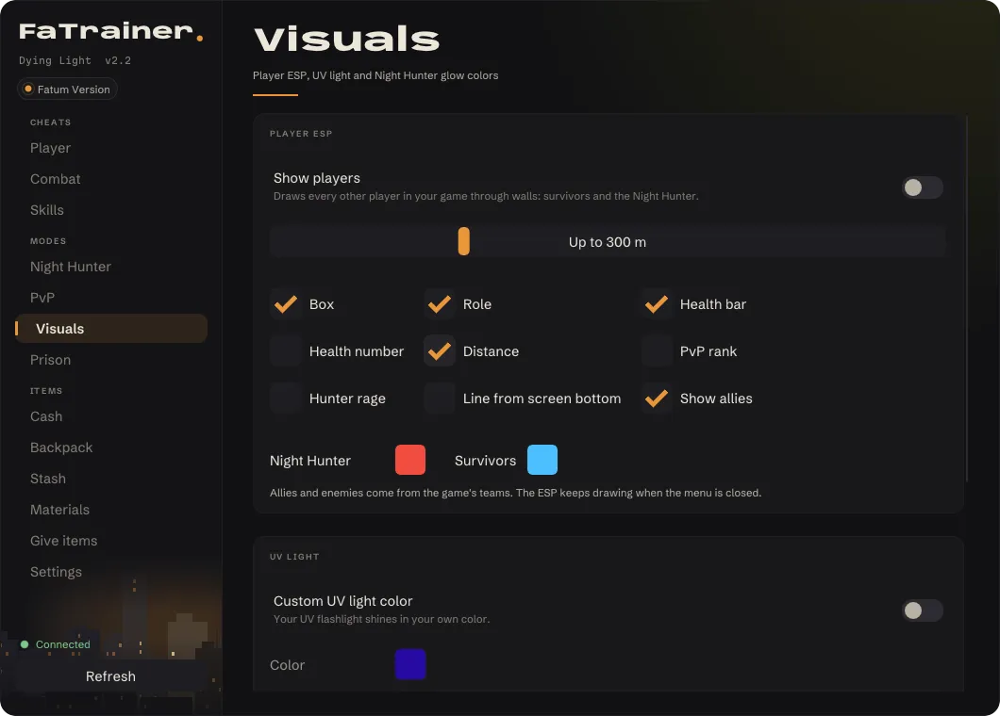

Run the installer, start the game and press Insert. God mode, items, a weapon editor, skill levels, Harran Prison timers and the reach of every Night Hunter attack, all in a menu over the game.
Every Night Hunter attack has a slider like this one: pounce, ground pound, tackle, claws, death from above, dropkick, kicks and spit radius. Each player's game decides its own attacks, so some sliders only change what happens on your side. Or load one of four presets: Survivor or Night Hunter, Legit or Rage. As a survivor, Dodge spit steps you aside from spit that would hit you, after a human reaction time.
Pounce reach10m
Normal
Normal: 10 m, aimed within 45°Aim angle 45°Max: 40 m, any direction
Pounce
Ground pound
Tackle
Claws
Death from above
Dropkick
Kicks
Spit radius
And the restof the sidebar.
Visuals, Skills, Prison, the item pages and Settings.
Visuals
Players through walls, your own UV light and Night Hunter glow.
Player ESPBox, role, health, distance, PvP rank, hunter rage and lines, with a range limit.
Separate colors for the Night Hunter and survivorsAllies on or off. It keeps drawing with the menu closed.
UV light color and glow
Night Hunter glow colorThe veins that light up under UV, in your color.

Skills and Prison
Progress and the Harran Prison run.
Set any skill tree, the Night Hunter level and both PvP ranksOr level up through real XP so the game hands out the points.
Pause the prison timers
Teleport to every splitOr record your route once and replay it, so every quest trigger fires.
Items and Settings
Cash, Backpack, Stash, Materials, Tools, Give items.
Any money and stack count
Give any weapon, upgrade, consumable or blueprintEach goes into the inventory the game accepts it in.
Weapon editorDamage, durability, crits, reach, magazine, reload, upgrades and rarity.
Named configs, menu key, size and sidebar order
Your lookAccent color, opacity, corner roundness, animations, the Harran skyline and glow.
One installer,one file in the game.
The installer downloads the trainer from the GitHub release, checks it against the release checksum and puts xinput1_3.dll next to the game. You can pick an older version from the list. Run it again to update or remove it. It also reads a small version file from GitHub to see whether a newer installer is out, and offers to update itself.
It finds Dying Light in your Steam libraries. If it does not, choose the folder with DyingLightGame.exe.
Press Install, start the game and press Insert or F8.
Linux with Proton
In Steam, open Dying Light's Properties, then Compatibility, and force a Proton version. The trainer works in the Windows version of the game, not the native Linux one.
Download the Linux installer, unpack it and run FaTrainer-Fatum-Version-Installer. It needs curl or wget, which almost every distribution has. On NixOS, start it with steam-run ./FaTrainer-Fatum-Version-Installer.
Press Install. The installer finds the game in your Steam libraries, Flatpak and Snap included.
In the game's Properties, paste this into Launch options:
WINEDLLOVERRIDES="xinput1_3=n,b" %command%
Start the game and press Insert or F8.
Before you play
Back up your saves
Item, level and rank changes are saved like any other progress. Keep a copy of your save folder before you try something big.
Other players
In co-op and Be The Zombie the trainer changes your game, and through it theirs. Switch things off when you play with people who did not agree to it.
Techland's rules
Modifying the game online may break Dying Light's terms of use. What Techland does about an account is between you and Techland.
Updates
When the game starts, the Fatum Version of the trainer downloads a small version file from GitHub. A newer build of your version, like 2.2 b2 after 2.2 b1, downloads itself, is checked against its checksum and starts the next time you open the game. If a newer version is out, the trainer stays off and asks you to run the installer again, unless you ticked Use older versions in the installer; the game itself keeps working. Nothing else is sent, and without internet the trainer works as usual. The Nexus Version on Nexus Mods has no update check and never connects to the internet.
If something breaks
The trainer writes fatrainer.log next to the game. Attach it when you report a problem.
NewSkill tree tiles with a draggable XP bar, -10 to +10 levels and extra skill points without changing the level. Health and stamina bars can be dragged too.
NewXP gain works in every skill tree, Night Hunter included, and the game's XP popup shows the boosted amount.
NewTake less damage, less UV damage for the Night Hunter, one hit kill on the Night Hunter and a sure-hit ground pound.
NewConfigs: save your own next to the built-in ones, on the PvP page and in Settings.
NewBuild numbers: a newer build of your version updates itself. The installer lets you pick a version, and Use older versions keeps an older one working.
FixedThe Night Hunter presets made the tackle and melee miss, and an invading hunter's spits could hit you from anywhere.
FixedUnbreakable weapons missed newly picked up weapons, and ranks showed a number instead of their name.
2.1Dodge spit, the Night Hunter glow color and a redesigned menu with appearance settings.